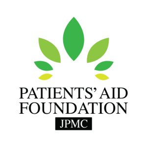
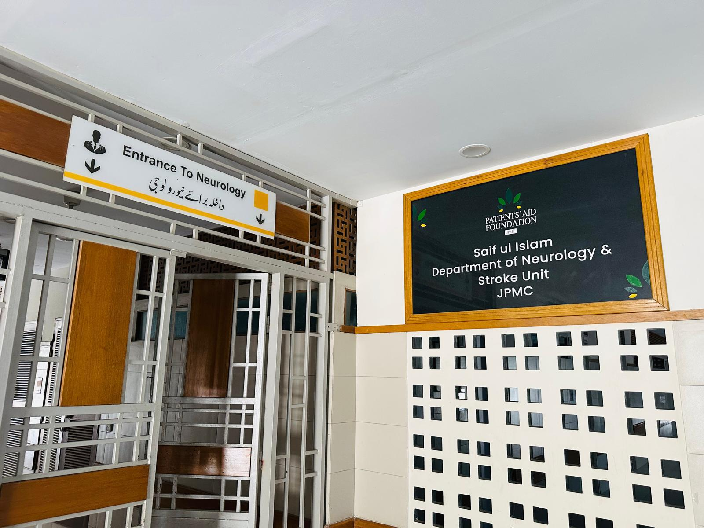
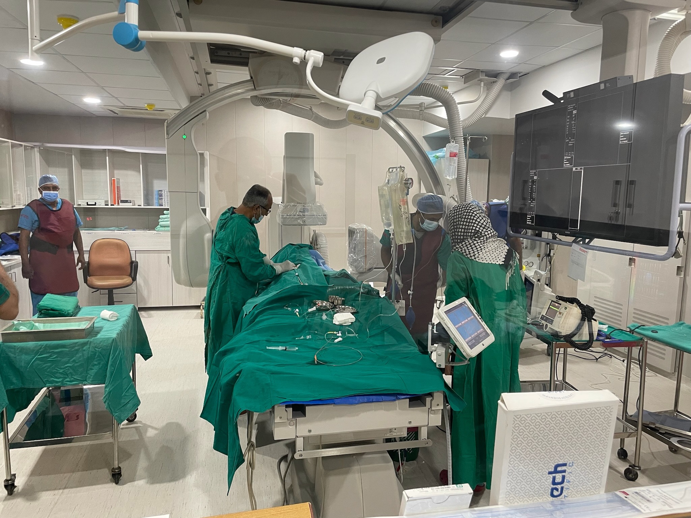
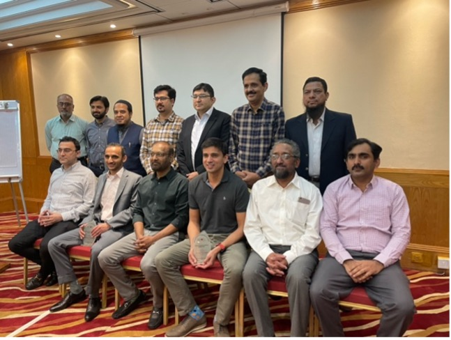
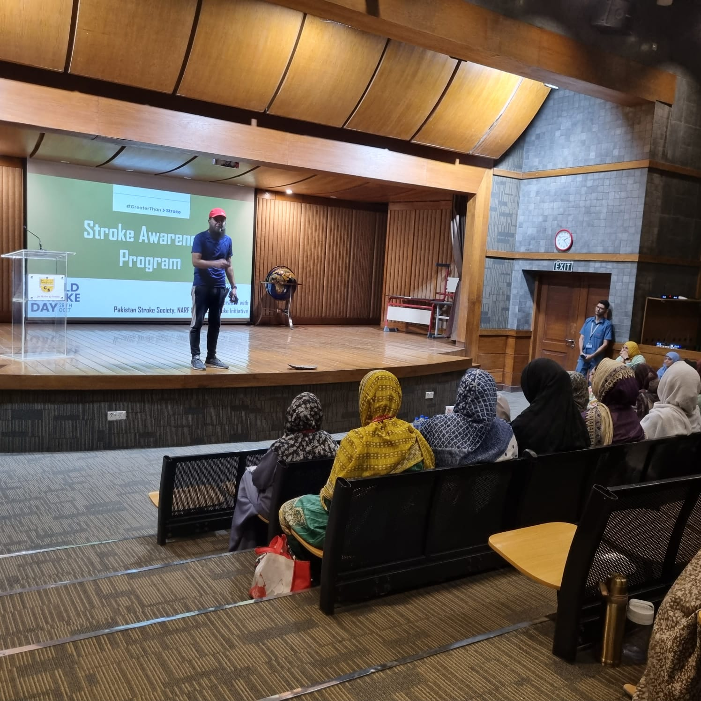
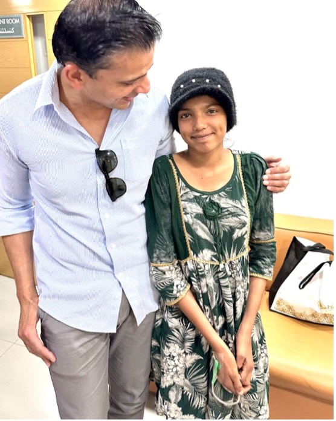
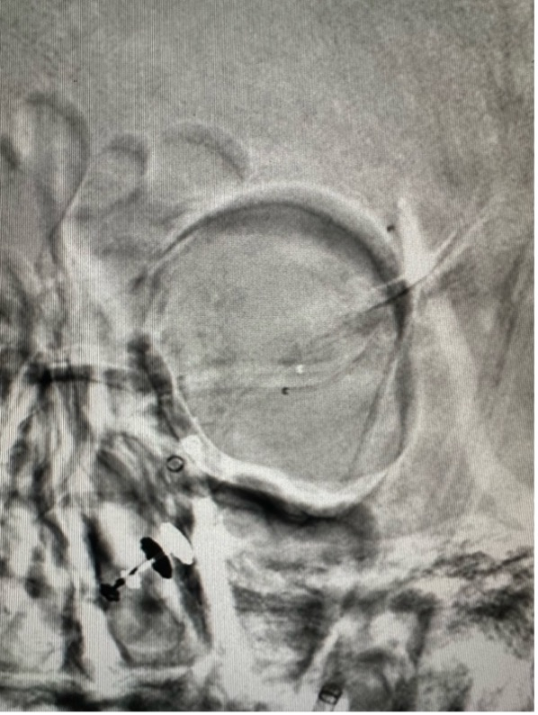
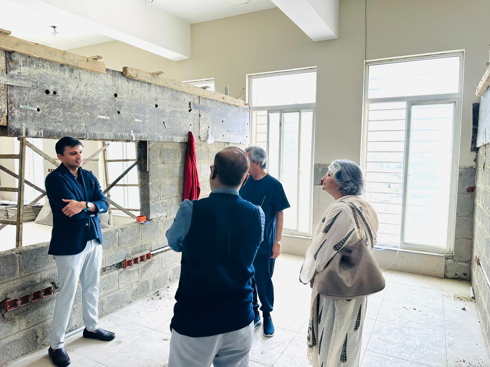
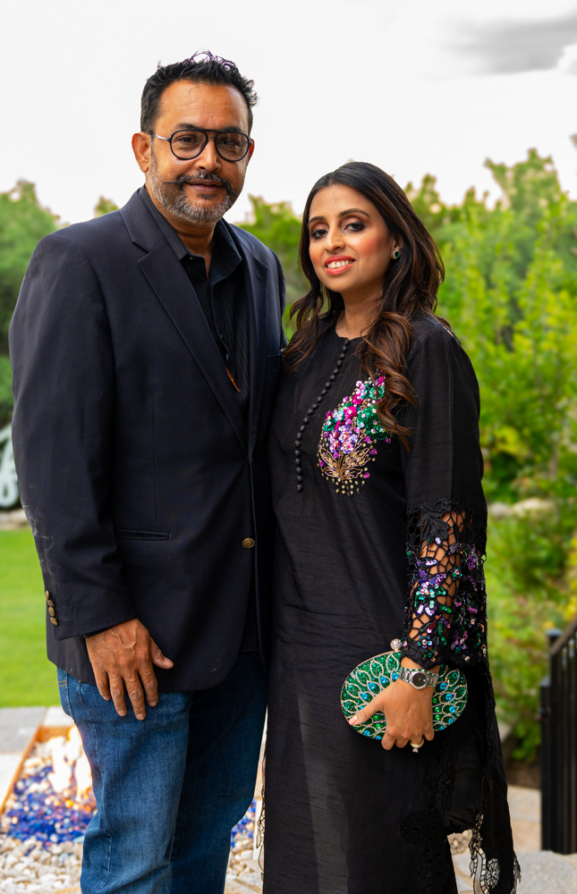

Stroke is a Leading Cause of Death & Disability in Pakistan
Raho Stroke se Aagay
We are a team of physicians transforming stroke care in Pakistan through awareness, training, and expanding access to life-saving treatment. Your support saves lives.
Jab band ho jaye haath, chehra, ya zabaan —
Fauran karo ilaaj
What is a Stroke?
A stroke occurs when blood flow to the brain is blocked. With 200 million people in Pakistan, at least 400 major strokes occur every day. Fast treatment saves lives.
Learn MoreWho We Are
A team of Pakistani-American physicians dedicated to bringing world-class stroke care to Pakistan through training, technology, and treatment programs.
Meet Our TeamWhy Donate?
Your donation funds life-saving treatment for patients who can't afford it, trains physicians in the latest techniques, and builds critical stroke infrastructure.
Donate NowWhy Pakistan Needs Stroke Care Now
With 240 million people, Pakistan faces approximately 1,000 new strokes every day — yet the vast majority of patients never receive proper treatment.
Young Population at Risk
Mean stroke age is 55 years. 20% of all strokes occur in patients under 40 — of these, 60% are women (pregnancy, postpartum).
Minimal Infrastructure
Only 25 stroke units in all of Pakistan (18 private, 7 public). Only ~200 thrombectomies were performed in 2025 across the entire country.
Healthcare Underfunded
Health budget is less than 1% of GDP — under $11 per person per year. 70% of healthcare is paid out of pocket, putting stroke treatment beyond reach for most families.
High Risk Factor Burden
- 34% hypertension (adults over 45)
- 10M+ diabetics
- 25% tobacco use (adults)
- 25%+ obesity rate
Comprehensive Stroke Center at Jinnah Postgraduate Medical Center

In partnership with the Patients' Aid Foundation and JPMC, we are building Pakistan's first comprehensive public-sector stroke center. A dedicated floor in the Surthi Neurology Building will house a Neuro-ICU, wards, and operation theater — all free for patients.

Programs & Achievements
Click through our key initiatives that are transforming stroke care across Pakistan.

ClinicalStroke Program at NICVD
Since March 2022, established a thrombectomy program at NICVD Karachi and deployed RAPID AI — making it the first center in South Asia to use advanced AI for stroke detection.
Learn More
TrainingPhysician Training Workshops
Clinical workshops across Pakistan training physicians in mechanical thrombectomy, aneurysm coiling, and cerebrovascular disease management.
Learn More
AwarenessStroke Awareness Campaigns
Seminars, workshops, and media campaigns across Pakistan using our Urdu stroke awareness acronym for public education.
Learn More
Patient StoriesIqra's Story: Free Treatment
A 14-year-old from Larkana with a ruptured brain aneurysm received life-saving treatment through PSI, funded entirely by donations.
Read Her Story
ResearchFirst-in-Human Device Trials
First-ever SEAL aneurysm device trial (8 patients, zero complications, FDA-recognized) and first global enrollment for Gravity Supernova Stentriever system.
Learn More
InfrastructureBiplane Suite
Fundraising for the neuroangiography biplane suite at JPMC — the essential machine for performing thrombectomies and treating brain aneurysms.
Support ThisWatch Our Stories
See the impact of our work through patient stories, awareness events, and clinical achievements.

Know the Warning Signs of Stroke
“Jab band ho jaye haath, chehra, ya zabaan — Fauran karo ilaaj, bachao apni jaan”
Urdu Stroke Awareness Acronym • Pakistan Stroke Initiative

Plans for a Comprehensive Stroke Center at JPMC
Pakistan Stroke Initiative

A Short Film: Stroke Symptoms
Pakistan Stroke Initiative

Pakistan Stroke Initiative - Who We Are & Our Goals
Pakistan Stroke Initiative

Why Brain Aneurysm & Stroke Treatment is Challenging in Pakistan
Pakistan Stroke Initiative

Dr. Zaidi - The Need for a Comprehensive Stroke Center
Pakistan Stroke Initiative

Mushtaq Chhapra: Patients' Aid Foundation Partnership with PSI
Pakistan Stroke Initiative
What People Are Saying
Hear directly from physicians, patients, and supporters about the impact of our work.


Previous & Upcoming Fundraisers
Join us at our next event or see what we have accomplished together.

PSI Fundraising Dinner - Boston
An evening of community, awareness, and fundraising for stroke care in Pakistan.
PSI Fundraising Dinner - Washington DC
A successful evening in the nation's capital supporting stroke care initiatives in Pakistan.
Upcoming Fundraiser with California Cricket Foundation
Join us Labor Day weekend for an exciting fundraiser in partnership with the California Cricket Foundation to support stroke care in Pakistan.
Raho Stroke se Aagay
You Can Be Their Hope After Stroke
Your donation funds life-saving treatment and helps stroke survivors regain independence. Every dollar makes a difference.
Make a Difference — Donate Now